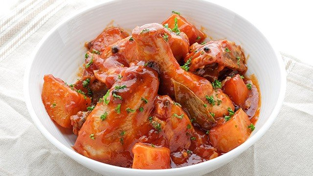

Chicken Asado Recipe
What is Chicken Asado?
Chicken Asado is a Filipino dish that is typically made by marinating chicken in a mixture of soy sauce and calamansi
juice,
then braising it in tomato sauce until tender and flavorful.
The dish is often served with steamed rice and is a
popular choice for family dinners or special occasions.
Ingredients
1 kilo chicken leg part, choice cuts
3 medium sized potatoes cut into quarter
4 tablespoons calamansi or lemon juice
2 tablespoons soy sauce
1 3/4 cup tomato sauce
1/4 cup butter
1 medium onion diced
3 pieces dried bay leaves
1 teaspoon fresh ground black pepper
salt to taste
1 cup Canola cooking oil
Instructions / How to Cook
1. Sprinkle salt and ground black pepper to the chicken, then rub the ingredients and leave it for about 20 minutes.
2. Apply heat in a frying pan, pour the Canola cooking oil, then fry the chicken. When all the chicken slices are cooked, set aside.
3. In a separate frying pan, apply heat and melt the butter.
4. When the butter is fully melted, add and saute the onions until it becomes soft.
5. Add the bay leaves and saute for a minute.
6. Pour the tomato sauce, stir, then bring to a boil.
7. When it started to boil, add the soy sauce, then stir.
8. Add the sliced potatoes.
9. Add the calamnsi juice and stir.
10. Cover the frying pan and simmer for 12 minutes.
11. Add the pan fried chicken slices, then mix the chicken to the sauce and simmer for another 5 minutes.
12. When the potato is already soft turn off the heat and serve while its hot.